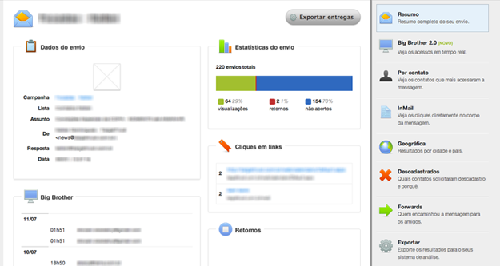

1 Relatórios
1.1 Resumo
Para acessar o resumo completo de uma mensagem, basta clicar na mensagem desejada. Seja na lista de mensagens, dashboard ou campanha.

Nesta tela você pode observar os dados do envio, estatísticas de acesso, a contagem de cliques nos links inseridos na mensagem e também pode acompanhar os acessos em tempo real (Big Brother).
1.2 Big Brother 2.0
Através do Big Brother 2.0 você pode acompanhar os acessos em tempo real com a localização geográfica do contato.
1.3 Contato
Mostra os contatos que mais acessaram a sua mensagem.
1.4 InMail
Visualize o contéudo da sua mensagem com os links destacados e a quantidade de cliques em cada.
1.5 Geográfica
Resultado dos acessos por cidades, no Brasil e no mundo.
1.6 Descadastros
Veja quem descadastrou e o porquê.
1.7 Forwards
Mostra os contatos que realizaram encaminhamento da mensagem.
1.8 Exportar
Exporte os resultados do envio para planilhas.